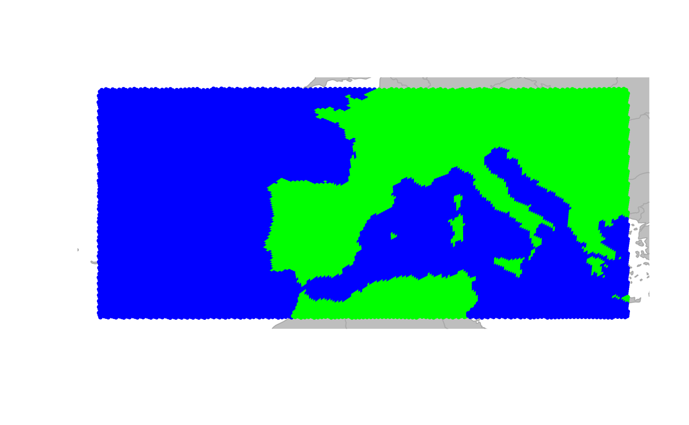
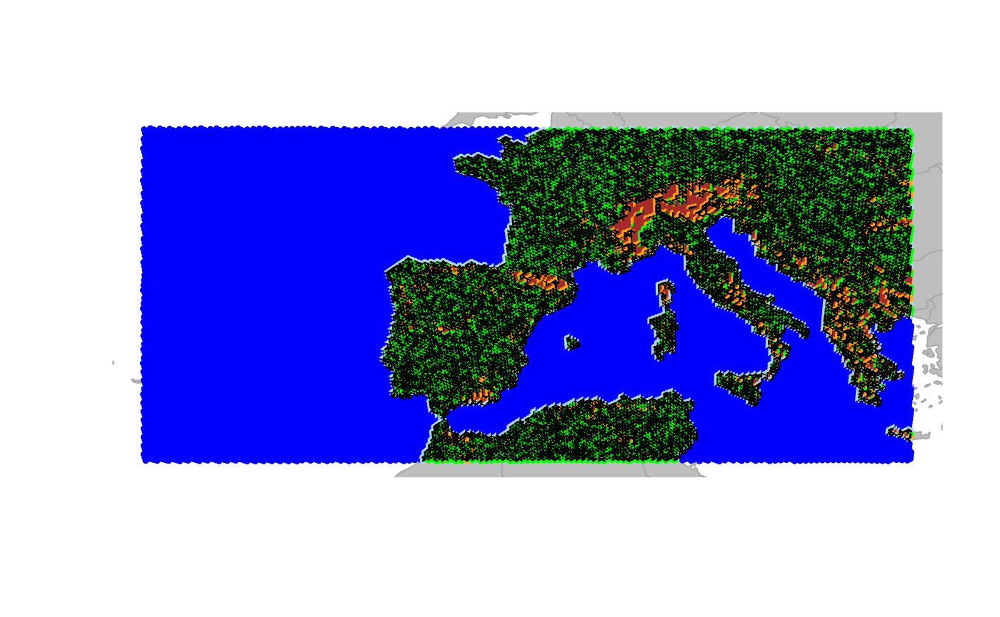
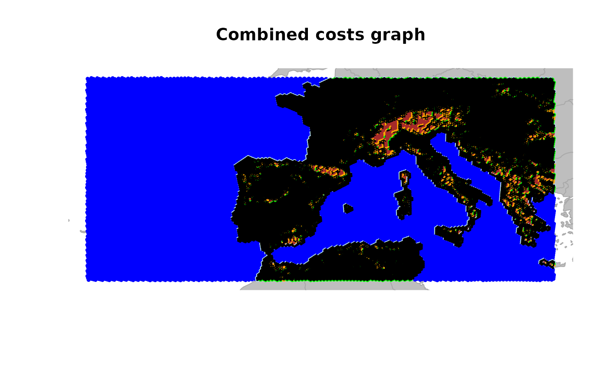
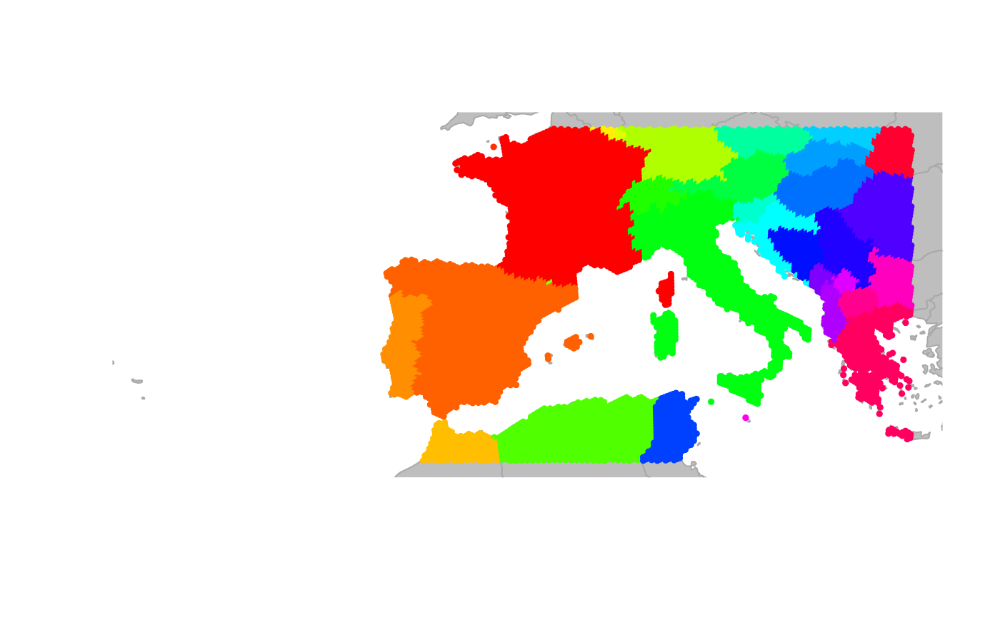
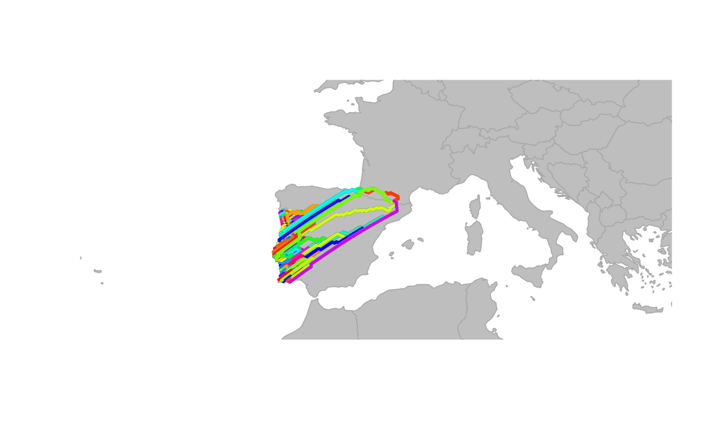

Using discrete global grids in geoGraph
This vignette illustrates how to create custom graphs in
geoGraph using discrete global grids. This is especially useful
when working over larger areas of the world, where a rectangular grid
would introduce messy distortions. Using the dggridR
package, we can create a custom hexagonal grids that provides a more
accurate representation of the Earth’s surface. We will then use this
grid to create a gGraph object in geoGraph and
assign environmental information to the nodes of the graph. This allows
us to create a cost surface for connectivity analysis that takes into
account both land/water classification and elevation variability.
Getting the elevation data
In the first step, we define the area of interest using a bounding
box and then use the get_elev_raster function from the
elevatr package to retrieve topographical and bathymetry
data for that area. The resulting data is then converted to a
SpatRaster object using the rast function from
the terra package.
# define the area of interest (Europe)
area_of_interest <- st_as_sfc(
st_bbox(c(
xmin = -25,
xmax = 25,
ymin = 34,
ymax = 50
), crs = 4326)
)
aoi_bound <- st_sf(geometry = area_of_interest)
elevation_data <- get_elev_raster(
locations = aoi_bound,
z = 4,
clip = "locations"
)
# convert to SpatRaster
spatr <- rast(elevation_data)
plot(spatr)
Makeing a land mask
Using this SpatRaster we can create a land mask by using
the make_land_mask function from the pastclim
package. This function identifies land and ocean areas based on the
simple logic of moving the ocean up and down given the current relief
profile for the time of choice. In this case, we use the present time (0
years before present) to create a land mask for our area of
interest.
# make land mask (everything above 0m is land)
land_mask <- make_land_mask(spatr, time_bp = 0) # using the present time
land_mask[is.na(land_mask)] <- 0
plot(land_mask)
Creating the graph object
Next, we create a new graph object using the
createNewGraph function from the geoGraph
package. We specify the geographic bounding box for for our area of
interest and set the spacing between nodes in the graph. The resulting
graph object represents a grid over the area of interest with cells of
the about 16km spacing, and we can visualize the graph structure using
the plot and plotEdges functions.
ggraph <- createNewGraph(geo_box = aoi_bound, spacing = 20)## Resolution: 11, Area (km^2): 287.933536398634, Spacing (km): 16.758963498128, CLS (km): 19.147021538141
Adding the land/water mask to the graph
We then use the assignRasterPoints function to add the
land/water mask to the graph. This function takes the graph object and
the land mask raster as inputs and assigns the land/water values to the
corresponding cells in the graph. In this example we classify each cell
with land points in it as land by defining the fun
parameter in collapseNodeAttribute as ‘min’, which means
that if there is at least one water point in the cell, the cell will be
classified as water. We can then visualize the resulting graph with the
land/water mask by plotting the graph and coloring the nodes based on
the land/water values.
water_graph <- assignRasterPoints(
graph = ggraph,
raster = land_mask,
layer_name = "water"
)
# now we collapse the water attribute to get a land/sea classification for each node
water_land_graph <- collapseNodeAttribute(
graph = water_graph,
attribute = "water",
fun = min,
na.rm = TRUE
)
# add this to the habitat attribute
habitat <- factor(water_land_graph@nodes.attr$water,
levels = c(0, 1),
labels = c("sea", "land")
)
# reclassify the nodes in the gGraph object accordingly in the metadata
water_land_graph@nodes.attr$habitat <- habitat #TODO can we use a setAttribute here?
colors <- data.frame(
habitat = c("sea", "land"),
cost = c("blue", "green")
)
# change colors associated with the land meta info
water_land_graph@meta$colors <- colors
plot(water_land_graph, reset = TRUE)
Setting costs for the different habitat types
Finally, we can set the costs for moving through different habitat
types based on their classification. Note that the cost here is
arbitrary and can be adjusted based on the specific context of the
analysis and the species or features being studied. Costs are inversely
related to the ease of movement through a cell, so higher costs indicate
more difficult terrain. For example, we can assign a cost of 10 for
moving through sea cells and a cost of 1 for moving through land cells.
If we now look at the least cost path between two cities (Madrid and
Naples) using the dijkstraBetween function, we can see that
the path tends to avoid sea cells and prefers to move through land
cells.
# set the costs for sea cells to 10 and land cells to 1
sea_cost <- 10
land_cost <- 1
water_land_graph@meta$costs <- data.frame(
habitat = c("sea", "land"),
cost = c(sea_cost, land_cost)
)
water_land_graph <- setCosts(water_land_graph, method = "mean", attr.name = "habitat")
point1 <- c(-3.7038, 40.4168) # Madrid
point2 <- c(14.2681, 40.8522) # Naples
cities.dat <- rbind.data.frame(point1, point2)
colnames(cities.dat) <- c("lon", "lat")
row.names(cities.dat) <- c("Madrid", "Naples")
cities <- new("gData", coords = cities.dat[, 1:2], gGraph.name = "water_land_graph")
path <- dijkstraBetween(cities)
plot(water_land_graph, reset = TRUE)
plot(path, col = "red", lwd = 2)
Assigning elevation data to graph nodes
In the next step we can then use the assignRasterPoints
function again to add elevation data to the nodes of the graph. In this
case we need to chose how to incorporate the elevation data into the
graph, since each node will have multiple raster points associated with
it. So before using the collapseNodeAttribute function to
get a single elevation value for each node, we can first have a look at
the standard deviation of the elevation values for each node, which
gives us an idea of the variability of elevation within each cell. This
can be useful for identifying rugged areas, which typically have high
variability in elevation and a higher cost of traveling through
associated. For this we set the fun parameter in the
collapseNodeAttribute function to sd, which
calculates the standard deviation of the elevation values for each node.
We can then visualize the distribution of the standard deviation of
elevation values for land cells by plotting a density plot.
elevation_graph <- assignRasterPoints(
graph = water_land_graph,
raster = spatr,
layer_name = "elevation"
)
# now we collapse the elevation attribute to get the sd of the elevation for each node
elevation_graph <- collapseNodeAttribute(
graph = elevation_graph,
attribute = "elevation",
fun = sd,
na.rm = TRUE
)
# have a look at the distribution of sd_elevation values for land cells
sd_ele <- getNodesAttr(elevation_graph)%>%
mutate(
elevation = ifelse(habitat == "land", elevation, NA_real_)
) %>%
pull(elevation)
# plot the density
plot(density(log(sd_ele), na.rm = TRUE),
main = "Density of SD Elevation for Land Cells",
xlab = "SD Elevation (m)", ylab = "Density"
)
Reclassify the nodes into ‘rugged’ and ‘very rugged’
Looking at the distribution of the standard deviation of elevation values for land cells, we can see that there are some cells with very high variability in elevation, which likely correspond to mountainous areas. We can then reclassify the nodes into ‘rugged’ and ‘very rugged’ based on an elevation threshold. Here we pick arbitrary thresholds for the standard deviation of elevation values to classify cells as ‘rugged’ and ‘very rugged’. Cells with a standard deviation of elevation greater than 100 are classified as ‘rugged’, while those with a standard deviation greater than 150 are classified as ‘very rugged’. We can then update the habitat attribute in the graph accordingly and visualize the resulting graph with the new habitat classifications.
# set a threshold for rugged cells
rugged_threshold <- 150
very_rugged_threshold <- 300
## now we identify rugged and very rugged cells as those with sd_elevation > threshold
habitat_new <- case_when(
is.na(sd_ele) ~ "sea",
sd_ele > very_rugged_threshold ~ "very_rugged",
sd_ele > rugged_threshold ~ "rugged",
TRUE ~ "land"
)
# update the habitat attribute in the graph
# reclassify the nodes in the gGraph object accordingly in the metadata
elevation_graph@nodes.attr$habitat <- habitat_new
colors <- data.frame(
habitat = c("sea", "land", "rugged", "very_rugged"),
cost = c("blue", "green", "orange", "brown")
)
# change colors associated with the land meta info
elevation_graph@meta$colors <- colors
plot(elevation_graph, reset = TRUE)
Now if we now set the cost for rugged and very rugged cells to be higher than for land cells, we can see that the least cost paths between different land areas tend to avoid not only sea cells but also rugged and very rugged cells. This can be shown in the same toy example as above.
# set the costs for sea cells to 10, land cells to 1, rugged cells to 3 and very rugged cells to 10
sea_cost <- 10
land_cost <- 1
rugged_cost <- 3
very_rugged_cost <- 10
elevation_graph@meta$costs <- data.frame(
habitat = c("sea", "land", "rugged", "very_rugged"),
cost = c(sea_cost, land_cost, rugged_cost, very_rugged_cost)
)
elevation_graph <- setCosts(elevation_graph, method = "mean", attr.name = "habitat")
point1 <- c(-3.7038, 40.4168) # Madrid
point2 <- c(14.2681, 40.8522) # Naples
cities.dat <- rbind.data.frame(point1, point2)
colnames(cities.dat) <- c("lon", "lat")
row.names(cities.dat) <- c("Madrid", "Naples")
cities <- new("gData", coords = cities.dat[, 1:2], gGraph.name = "elevation_graph")
path <- dijkstraBetween(cities)
plot(elevation_graph, reset = TRUE)
plot(path, col = "red", lwd = 2)
Adding coastal cells
Now in a last step we can add a ‘coast’ category to the habitat classification for cells that are adjacent to any land based cells. This is done by checking the neighbors of each sea cell and reclassifying those that have at least one land or mountain neighbor as ‘coast’. We can then visualize the resulting graph with the new habitat classifications, including the coastal cells.
# get the neighbor list from the graph
neigh_list <- elevation_graph@graph@edgeL
node_attr <- getNodesAttr(elevation_graph)
# get all nodes adjacent to land or mountain cells and reclassify them as "coast"
for (i_node in 1:nrow(node_attr)) {
if (node_attr$habitat[i_node] == "sea") {
neighbour_indices <- neigh_list[[i_node]]$edges # check structure!
neighbour_land_values <- node_attr$habitat[neighbour_indices]
if (any(neighbour_land_values %in% c("land", "rugged", "very_rugged"))) {
# at least one land or mountain neighbour
node_attr$habitat[i_node] <- "coast"
}
}
}
new_attribute <- node_attr
# create the full_graph
full_graph <- elevation_graph
# set the new node attributes
full_graph@nodes.attr <- new_attribute
colors <- data.frame(
habitat = c("sea", "land", "rugged", "very_rugged", "coast"),
cost = c("blue", "green", "orange", "brown", "lightblue")
)
# change the costs and colors associated with the land meta info
full_graph@meta$colors <- colors
plot(full_graph, reset = TRUE)
Now if we set the cost for coastal cells to be the same as for land cells, we can see that the least cost paths between different land areas tend to prefer crossing coastal cells over crossing rugged areas.
# set the costs for sea cells to 10, land cells to 1, rugged cells to 3, very rugged cells to 10 and coastal cells to 1
sea_cost <- 10
land_cost <- 1
rugged_cost <- 3
very_rugged_cost <- 10
coastal_cost <- 1
full_graph@meta$costs <- data.frame(
habitat = c("sea", "land", "rugged", "very_rugged", "coast"),
cost = c(sea_cost, land_cost, rugged_cost, very_rugged_cost, coastal_cost)
)
full_graph <- setCosts(full_graph, method = "mean", attr.name = "habitat")
point1 <- c(-3.7038, 40.4168) # Madrid
point2 <- c(14.2681, 40.8522) # Naples
cities.dat <- rbind.data.frame(point1, point2)
colnames(cities.dat) <- c("lon", "lat")
row.names(cities.dat) <- c("Madrid", "Naples")
cities <- new("gData", coords = cities.dat[, 1:2], gGraph.name = "full_graph")
path <- dijkstraBetween(cities)
plot(full_graph, reset = TRUE)
plot(path, col = "red", lwd = 2)
Using different methods to calculate costs
So far the costs for moving through different habitat types were
defined by the mean of the costs associated with the different habitat
types. However, the setCosts function allows to use
different methods to calculate the costs for each edge based on the node
attributes. For example, instead of using the mean, we could specify a
custom function that takes the maximum cost of the two nodes connected
by an edge, which would mean that the cost of moving through an edge is
determined by the more difficult habitat type of the two nodes. This can
be done by defining a custom function max.cost and then
using it in the setCosts function with the method set to
“function”. The resulting graph will have costs for each edge that
reflect the maximum cost of the two nodes it connects.
max.cost <- function(x1, x2) {
pmax(x1, x2)
}
full_graph <- setCosts(
full_graph,
attr.name = "habitat",
method = "function",
FUN = max.cost
)
plot(full_graph, reset = TRUE)
plotEdges(full_graph)
Combining costs
In many ecological applications, connectivity across landscapes
depends on multiple environmental constraints rather than a single
variable. In the previous sections we constructed terrain-based costs
that capture differences in movement through sea, land, rugged, and very
rugged areas. However, climatic factors can also influence movement and
dispersal. To illustrate how multiple environmental layers can be
incorporated into a connectivity model, we now add an additional
environmental gradient: temperature, which in this example
is a random variable that we assign to the nodes of the graph. The
movement cost between two nodes can then be defined as a function of the
difference in temperature between the two nodes, with a cost that
increases as the temperature difference increases. The
setCosts function is then used to apply this cost function
to the graph based on the temperature values assigned to each node.
exp.cost <-
exp.cost <- function(x1, x2, cost.coeff) {
exp(-abs(x1 - x2) * cost.coeff)
}
# create a set of node costs for temperature
land_graph <- dropDeadEdges(full_graph, thres = 9)
land_graph@nodes.attr$temp <- runif(n = 25821)
temperature_graph <-
setCosts(
land_graph,
node.values = land_graph@nodes.attr$temp,
method = "function",
FUN = exp.cost,
cost.coeff = 1
)
plot(temperature_graph, edge = TRUE)
plotEdges(temperature_graph)
Now we want a combined cost that both captures the temperature as
well as the terrain. For this we can use the combineCosts
function, which allows to combine costs from two different graphs using
a specified method (sum, product, or a custom function). Here we will
use the prod method to combine the costs from the
temperature_graph and the land_graph, which
multiplies the costs from both graphs to create a new cost that reflects
both the temperature and terrain constraints on movement.
combine_costs_graph <- combineCosts(temperature_graph, land_graph, method = "prod")
plot(combine_costs_graph, edge = TRUE)
plotEdges(combine_costs_graph)
title("Combined costs graph")
Extracting information from GIS shapefiles
In the previous sections, we extracted environmental information from
raster layers and assigned it to graph nodes using
assignRasterPoints. Another way geoGraph can serve
as an interface between geographic information system (GIS) layers and
geographic data is the function extractFromLayer.
geoGraph uses sf objects to represent geographic
objects such as points and polygons. By default, geoGraph uses
the package rnaturalearth to provide continent and country
outlines, but it is possible also to load custom GIS shapefiles with
sf::st_read().
We start by loading country outlines for the whole world. Note that
we turn off spherical trigonometry functions with
sf::sf_use_s2(FALSE), as the naturalearth
dataset is not compatible with that functionality.
library(sf)
sf_use_s2(FALSE)
world.countries <- rnaturalearth::ne_countries(
scale = "medium",
returnclass = "sf"
)Let us assume that we are interested in add continent and country
information to the full_graph object.
newGraph <- extractFromLayer(full_graph,
layer = world.countries,
attr = c("continent", "name")
)
summary(getNodesAttr(newGraph))## water habitat elevation continent
## Min. :0.0000 Length :25821 Min. : 0.00 Length :25821
## 1st Qu.:0.0000 N.unique : 5 1st Qu.: 31.60 N.unique : 2
## Median :0.0000 N.blank : 0 Median : 78.48 N.blank : 0
## Mean :0.3725 Min.nchar: 3 Mean : 115.07 Min.nchar: 6
## 3rd Qu.:1.0000 Max.nchar: 11 3rd Qu.: 154.74 Max.nchar: 6
## Max. :1.0000 Max. :1298.22 NAs :15694
## NAs :45 NAs :83
## name
## Length :25821
## N.unique : 32
## N.blank : 0
## Min.nchar: 5
## Max.nchar: 16
## NAs :15694
## The new object newGraph is a gGraph which
now includes, for each node of the grid, the corresponding continent and
country retrieved from the GIS layer. Note that
extractFromLayer can extract information to other types of
objects than gGraph (see
?extractFromLayer)
We can use the newly acquired information for plotting
newGraph, by defining new color rules:
temp <- unique(getNodesAttr(newGraph)$"name")
col <- c("transparent", rainbow(length(temp) - 1))
colMat <- data.frame(name = temp, color = col)
head(colMat)## name color
## 1 <NA> transparent
## 2 France #FF0000
## 3 Jersey #FF3000
## 4 Spain #FF6000
## 5 Portugal #FF8F00
## 6 Morocco #FFBF00
tail(colMat)## name color
## 28 Kosovo #DF00FF
## 29 Malta #FF00EF
## 30 Bulgaria #FF00BF
## 31 North Macedonia #FF008F
## 32 Greece #FF0060
## 33 Ukraine #FF0030
plot(newGraph, col.rules = colMat, reset = TRUE)
This information could in turn be used to define costs for traveling on the grid. For instance, one could import habitat descriptors from a GIS, use these values to formulate a habitat model, and derive costs for dispersal on the grid.
Look at connectivity between two polygons
test <- polygonBetween(newGraph, layer = "name", "Andorra", "Portugal", outline = FALSE)
plot(newGraph, col = NA, reset = TRUE)
plot(test)